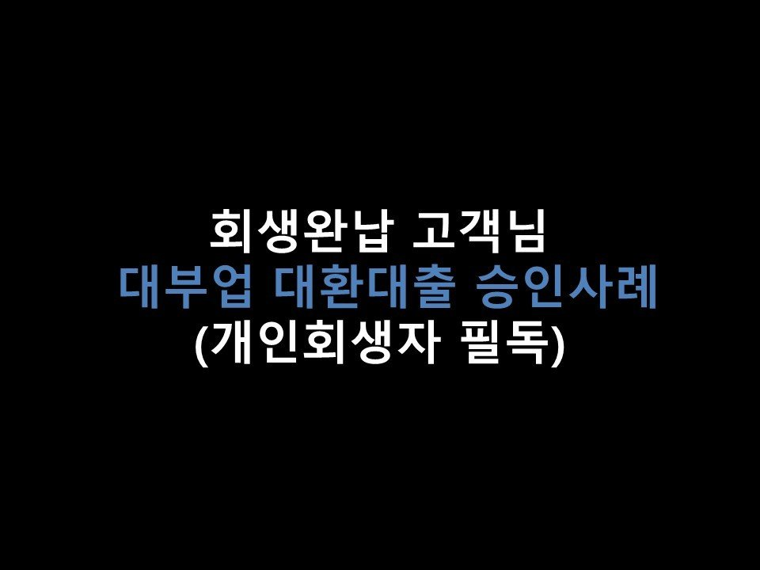
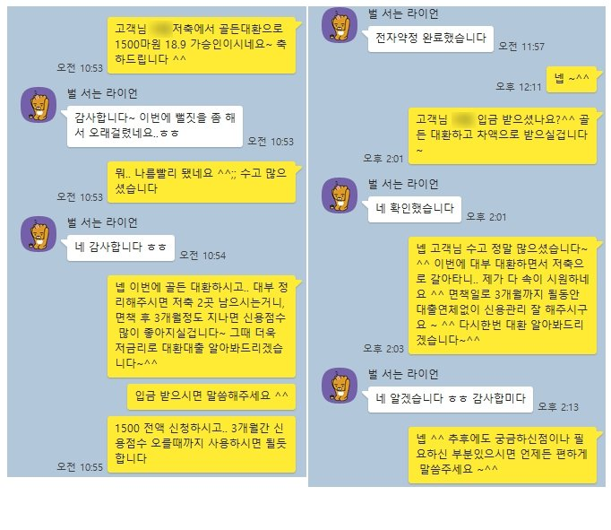

★회생완납 고객님 대부업 대환대출 승인사례(개인회생자 필독)★

안녕하세요 ~ ^^ 오늘은 개인회생 완납하신 고객님의 승인사례를 소개해드리겠습니다 ~^^
고객님께서는 올해 7월 회생 완납 후 면책을 기다리고 있으신 상황이었으며, 회생 이후 이용중이신 대출로는
저축은행 1건 1500만원, 대부업 1건 800만원을 갖고계셨습니다~
고객님께서는 현재 4대보험가입된 직장에서 11개월간 근무하셨으며, 연봉은 약 4000만원 가량이었습니다.
고객님께서는 대부업 1건을 저축은행으로 대환 가능할지 여부에 관하여 저희 뱅크앤론으로 문의를 주셨습니다~ ^^
고객님의 조건을 보았을때 소득대비 채무가 과다하신 편이 아니고, 대부업 대출도 1건만 소지하셨기에
충분히 대환대출 가능하실듯 보여, 가장 승인률 좋은 저축은행으로 심사를 도움드린 결과,
S저축에서 대부업대환 및 추가자금 총 1500만원의 한도가 나오게 되었습니다 ~^^
회생 면책 후 3개월간은 신용점수가 오르는 단계이고.. 일반 신용대출이 잘 안되는 시기이기 때문에,
1500만원 전액 신청하셔서 800만원은 대부업대출 대환, 그리고 남은 700만원은 면책 3개월 이전까지 융통하시길
조언드렸습니다~^^ 고객님께서는 만족해하시며 1500만원을 전액 승인 받으실 수있게 되었습니다 ^^
아래는 저와 고객님의 카톡 대화내용입니다 ~^^ 참고 부탁드립니다 ^^
< 저축은행 대환 TIP >
* 회생완납 시점의 경우에는 이용중이신 대부대출을 저축은행권으로 대환을 하는것이 면책 이후 신용관리, 저금리 대출에 유리합니다.
* 최근 1개월 이내 대부대출이 실행되셨거나, 대부업 부결이력이 있을경우 저축은행 심사가 어려울 수있습니다.
* 소득 증빙 불가자, 미비자는 대환대출이 불가하십니다.
* 소득대비 채무가 과다하실 경우 저축은행 심사가 어려우실 수있습니다. ex) 연봉 3000만 직장인 회생 채무 총 4000만
* 대부업 대출 건수가 과다하실경우 저축은행 심사가 어려우실 수있습니다. ex) 대부업 4건 이상
